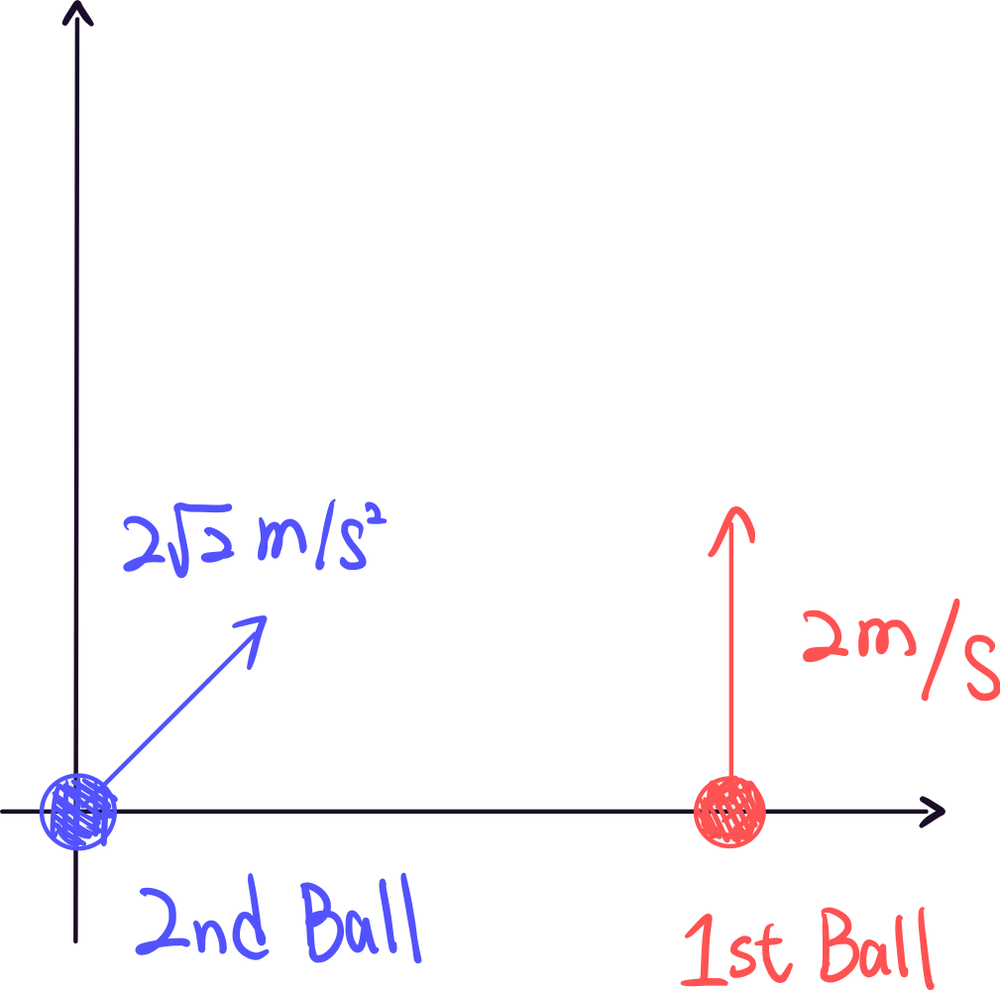

Two and Three Dimensional Motion
Position and Displacement in Two or Three-Dimensional Space
In one-dimensional motion, we use x to denote the position of an object, and \Delta x to denote the displacement. Both are scalars, as we can simply use positive or negative numbers to represent them.
However, in two or three-dimensional motion, we need to describe the position in a more complex space. Therefore, we use x and y to denote the position of an object in two or three-dimensional space, and \Delta x and \Delta y to denote the displacement. If we combine these terms, we can form a vector \overrightharpoon{r} = \left( x,y,... \right) (sometimes written as \overrightharpoon{x}, \bold{r}, \bold{x}) to represent the position, and \Delta \overrightharpoon{r} = \left( \Delta x, \Delta y,... \right) to represent the displacement in two or three-dimensional space.
Unit Vector Notation
In physics, we use unit vector notation to represent the position and displacement of an object in two or three-dimensional space. For example, we use \hat{i}, \hat{j}, and \hat{k} to represent the unit vectors in the x, y, and z directions, respectively. Therefore, we can represent the position of an object in multi-dimensional space as \overrightharpoon{r} = x\hat{i} + y\hat{j} + ..., and the displacement as \Delta \overrightharpoon{r} = \Delta x\hat{i} + \Delta y\hat{j} + ....
Sample Problem #1
Assume a car's position in a two-dimensional space is described as \overrightharpoon{r} = \cos{(\frac{2\pi t}{T})} \hat{i} + \sin{(\frac{2\pi t}{T})} \hat{j} , where T is a constant. (a) What is the car's displacement between \frac{T}{4} and \frac{T}{2}? (b) Does the car pass the origin at any point in time? If yes, when? (c) Does the car perform periodic motion? If yes, what is the period? (Periodic motion implies that the car will follow a path after a fixed time.)
Velocity in Two or Three-Dimensional Space
Similarly, we also need to describe the velocity of an object in two or three-dimensional space. We can use the formula below to represent the velocity of an object in two or three-dimensional space:
\overrightharpoon{v} = \left( v_x, v_y,... \right) = v_x\hat{i} + v_y\hat{j} + ... .
Average Velocity
Recall that the average velocity in one-dimensional space can be written as follows:
v_{avg} = \frac{\Delta x}{\Delta t}
We can use a similar formula to calculate the average velocity in two or three-dimensional space, as they are based on the same physics.
\overrightharpoon{v_{avg}} = \frac{\Delta \overrightharpoon{r}}{\Delta t}= \frac{\Delta {x}\hat{i}+\Delta {y}\hat{j}+...}{\Delta{t}}=\frac{\Delta {x}}{\Delta t}\hat{i} + \frac{\Delta {y}}{\Delta t}\hat{j} + ...
Compared with (1), we can easily find that the vector element in the average velocity can be described as {(v_{avg})}_i = \frac{\Delta r_i}{\Delta t}
Instantaneous Velocity
Similar to the instantaneous velocity in one-dimensional space, the instantaneous velocity in multiple-dimensional space can be written as follows:
\overrightharpoon{v} = \lim_{\Delta t \to 0} \frac{\Delta \overrightharpoon{r}}{\Delta t} = \lim _{\Delta t \to 0} \frac{\Delta {x}}{\Delta t}\hat{i} + \lim _{\Delta t \to 0} \frac{\Delta {y}}{\Delta t}\hat{j} + ... = \frac {d{x}}{dt}\hat{i} + \frac {d{y}}{dt}\hat{j} + ...
Compared with the instantaneous velocity in one-dimensional space
{v} = \frac{dx}{dt}
, we can also write the instantaneous velocity in two or three-dimensional space as follows:
\overrightharpoon{v} = \frac{d\overrightharpoon{r}}{dt} = \frac{d{x}}{dt}\hat{i} + \frac{d{y}}{dt}\hat{j} + ...
Compared with (1), we can easily find that the vector element in the instantaneous velocity is the derivative of the vector element in the position, that is {v}_i = \frac{d{r}_i}{dt}
Sample Problem #2
Assume that a car's position in a two-dimensional space is described as \overrightharpoon{r} = 3t^2\hat{i} + 2t\hat{j}. Answer the following questions:
(a) What is the average velocity between 0 and 5 seconds? What is the magnitude of the average velocity?
(b) What is the function of velocity over time?
Sample Problem #3
Assume that a ball follows a path y(x) = x^3 + x^2 -3x -2. And x is a function of time, x(t) = 4t^3 + (t-2)^2 -5 . Answer the following questions:
(a) Will the ball pass the origin at any point in time? If yes, when?
(b) Find the average velocity between 0 and 1 seconds.
(c) Find the function of the ball's velocity over time.
(d) Will the ball stop at any time? If yes, when?
Acceleration in Two or Three-Dimensional Space
Similarly, we can describe the acceleration in a two or three-dimensional space. We can use the formula below to represent the acceleration of an object in a two or three-dimensional space:
Average Acceleration
\overrightharpoon{a}_{avg} = \frac{\Delta \overrightharpoon{v}}{\Delta t} = \frac{\Delta {v_x}}{\Delta t}\hat{i} + \frac{\Delta {v_y}}{\Delta t}\hat{j} + ...
Instantaneous Acceleration
\overrightharpoon{a} = \frac{d\overrightharpoon{v}}{dt} = \frac{d{v_x}}{dt}\hat{i} + \frac{d{v_y}}{dt}\hat{j} + ...
Sample Problem #4
If the velocity of an object in a two-dimensional space is described as \overrightharpoon{v} = \cos(t)\hat{i} + 2t\sin(t)\hat{j} . (a) What is the average acceleration between 0 and \frac{\pi}{3} seconds? (b) Find the function of acceleration over time.
Sample Problem #5
(a) Follow the step in formula (2) to (5), derive the formula (6) and (7).
(b) Find the derivative relation between insantaneous acceleration and position in three-dimension space.
Integrate Relation of Position, Velocity and Acceleration
Similar to one-dimensional motion, we can integrate the derivative relation to get the relation between the position, velocity and acceleration.
Integrate Relation between Position and Velocity
In (1)(5), we can easily find that each vector element in the instantaneous velocity is the derivative of the vector element in the position, so we can integrate them respectively to get the relation between the position and velocity.
\text{(1) (5)} \Rightarrow v_i = \frac{d{r}_i}{dt} \Rightarrow r_i(t)=\int dr_i = \int v_i dt
If the velocity v_i is constant ,and the position at time t = 0 is r_i(0) = r_{i0}, then we can integrate the relation between the position and velocity.
\text{(8)} \Rightarrow r_i(t) =C_i+ v_it \Rightarrow r_i(t) = r_{i0}+v_it
Other Relations between Position, Velocity and Acceleration
Similarly, we can also find the relations below:
v_i(t) = \int dv_i = \int a_i dt
v_i(t) = v_{i0} + a_it
(Under the condition that the acceleration is constant)
r_i(t) =r_{i0} + v_{i0}t +\frac{1}{2} a_it^2
(Under the condition that the acceleration is constant)
Sample Problem #6
(a) Derive the formula (10) to (12). (b) If the acceleration is not constant, given by a(t) = 4t + 3 , find the relation between position and velocity.
Sample Problem #7
There is a game with two balls, the first ball is moving on with the velocity v_1 = 2 \hat{j} \text{ m/s}.The player need to launch the second ball with 45 degrees and the acceleration a_2 = 2\sqrt{2}\rm{\ m/s^2} from the origin from the rest. If the second ball hit the first ball, get the formula goal.
If the first ball is launched from the position r_{x0} = 9\hat{i} \text{ m}, how many time the player need to wait for launching the second ball making the second ball hit the first ball? How many seconds to hit the first ball after the first ball launched?
